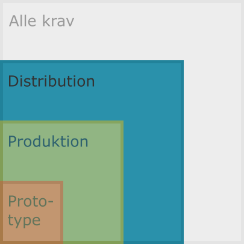

Kategori: Distribution¶

I denne kategori hører software, der har en offentlig snitflade og dermed brugere uden for vores organisation, som er afhængige af ikke bare kvalitet, men også tilgængelighed og driftsikkerhed.
Sammen kravene til kategorierne Prototype og Produktion skal nedenstående være opfyldt for programmel kategoriseret som Distribution.
Systemafhængigheder¶
Systemafhængigheder er alt, hvad det pågældende programmel er afhængigt af for at virke, og kan blandt andet bestå af følgende:
-
Forud-installerede programmer, der ikke kommer med programmellet, herunder eksempelvis en Python-distribution til at køre Python-kode.
-
Styresystemer, programmellet kan køre på.
-
Brugerens egne adgange til netværksressourcer som netværksdrev, servere (lokale som eksterne) og Internettet.
-
Separat fra adgange til netværk er systemadgange, der kræver (eksplicitte) login-oplysninger for specifikke brugerkonti, som anvendes af programmet.
Både bruger og udvikler skal få et overblik over afhængigheder som disse, når de tilgår dokumentationen i arkivet. Derfor:
-
Brug gerne diagrammer til illustration af teknisk infrastruktur, databaser og andet, hvor forbindelserne mellem komponenterne kan blive klarere derved.
-
Brug gerne tabeller til konkrete informationer som servernavne/adresser og andet, hvor prosatekst eller punktlister ikke rigtig gør det nemt nok at læse og få overblik over informationerne.
-
Overvej generelt, hvordan informationerne bedst kan præsenteres, så de skaber en klar forståelse af indholdet for læseren.
Continuous Delivery/Deployment (CD)¶
Continuous deployment og continuous delivery [begge forkortet CD] henviser til to processer, der begge kan være en del af éns Continuous-Integration [CI] pipeline:
-
Continous deployment er den automatiske produktion og versionering af pakker baseret på de enkelte commits, der kommer igennem éns krav (kvalitetssikring så som fejlfri testkørsel) i CI-opsætningen. Det betyder, at der for hver arkiv-version, som virker, bliver produktet gjort klar til brug.
-
Continuous delivery er den automatiske ibrugtagning af nye programmel-versioner, når de bliver tilgængelige på måden beskrevet under continuous deployment.
Som indikeret er continuous deployment og continuous delivery som regel processer, der sættes op i éns continuous-integration pipeline.
Ovenfor har er nævnt brugen af én eller flere workflow-filer, der kan læses af GitHub Actions, når kodeændringer sendes til det centrale arkiv på GitHub.
På kontoret DADs servere er CI-platformen
Jenkins, hvor éns CI-pipeline styres med skridt i en enkelt fil, der som
standard skal hedde Jenkinsfile.
Som eksempel på en applikation kan nævnes Valdemar, der automatisk rulles ud på test-serveren (Continuous Delivery), men kun manuelt kan rulles på produktionsserveren. WEBPROJ har en tilsvarende opsætning.
API-dokumentation¶
Programmel kan anvendes af anden kode eller andre systemer på flere måder. Snitfladen til programmellets funktionalitet fra eksterne programmer kaldes for Application-Programming Interface [API]. Følgende scenarier er eksempler på API'er:
-
Er programmellet et bibliotek, der kan bruges som tredjepartsmodul i andre sammenhænge, vil API her henvise til dén del af bibliotekets funktionalitet, som har til formål at eksponere funktionaliteten til brugeren.
-
Programmel, der som selvstændigt programmet [en. applikation] udstiller eksempelvis en service, når programmet kører, har dermed også en API, som kan tilgås på flere forskellige måder og ikke nødvendigvis med programmel skrevet i samme programmeringssprog som programmet selv.
Der skal være dokumentation af programmellets API med i resten af dokumentationen.
Tilgange til API-dokumentation kan være følgende:
-
Automatisk produktion af dokumentation ud fra signaturer og docstrings i Python-kildekoden.
-
Automatisk produktion og udstilling af konsumérbar API-dokumentation ud fra samme. Konsumérbar vil her sige, at der kan produceres en service med en interface, der i sig selv er en udstilling, hvor det udstillede er noget, der definerer API'en for programmellets service.